Check out the game here!


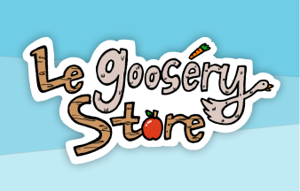
Design Lead and UI/UX Designer
January 2025 - May 2025
FigJam/Figma
Le Goosery Store is a tower defense mobile game born out of Cornell University's GDIAC course, Advanced Topics in Computer Game Design. Over the course of a semester, I worked in a multidisciplinary team of ten people to bring this game to life. As the design lead and UI/UX designer, I directed the game's art direction and designed its UI while ensuring player satisfaction through playtesting sessions. By the end of the course, my team and I launched Le Goosery Store on both iOS and Android platforms, and presented it at Cornell's annual GDIAC Showcase, where it won an award for Most Polished!
Check out the game here!
As soon as we settled on a basic concept of the game, I got right to work on a physical prototype of it. This physical prototype would help us visualize the game, its gameplay style, and forecast difficulties that players might encounter. In creating this prototype, it was easy for me to discretize most elements of our game, such as mapping our characters' movements to a grid system and locking their movement to a metronome's beat.
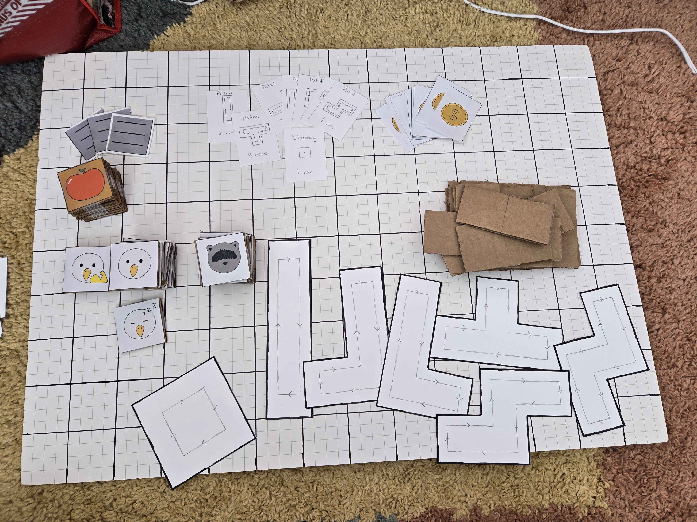
Bringing the prototype to an internal playtest, I found some issues with the prototype. Namely:
These issues were critical as we needed to be able to run the prototype smoothly with real playtesters. With these observations in mind, I added paper flaps to each of the character tokens, making them easier to pick up and orient. I also color-coded each tetromino, making it faster for people to find the matching pattern cutout. Satisfied with these changes, I brought the prototype to our in-class playtesting session the next day.
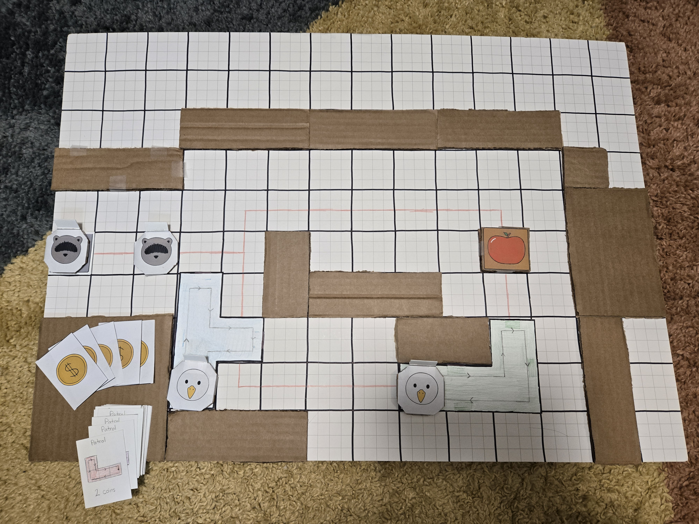
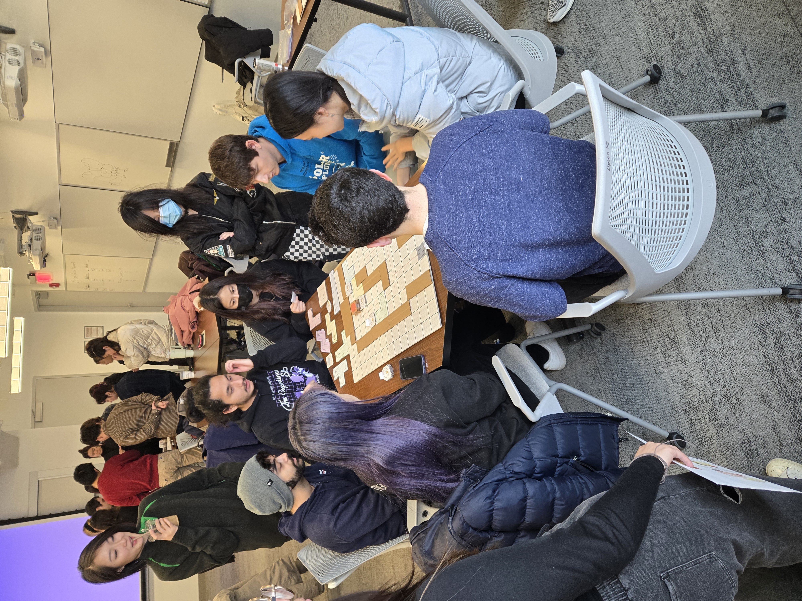
While my teammates ran the prototype, I conducted short interviews to gather feedback from playtesters who finished playing. The general consensus was that the game was fun, but stressful. Digging into the feedback, I extracted the following insights:
Presenting these insights to my team, we discussed ways to address each one. Here were the solutions that we came up with:
With the gameplay figured out, it was time to brainstorm the game's artistic style. As the design lead, I gathered my fellow designers to collaborate on a moodboard using FigJam. Through FigJam, we were able to quickly share ideas and expediate understanding with visual references.
FigJamBy the end of the brainstorming session, we ended up with a cute, papercraft style inspired by games like Paper Mario and the Origami King and Duck Detective - The Secret Salami.
How does our game stand out among its competitors? Together with my team, we researched our game's competitors, such as Kingdom Rush and Bloons Tower Defense. Understanding what made our game different from its competitors allowed us to zone in on unique features and capitalize on them during game development.
SlideshowAs this was a big project, we worked on it in 2-week sprints. During the sprint, I worked on creating UI assets and ensuring that character and environmental assets were cohesive. Towards the end of the sprints, there were in-class playtesting sessions in which I conducted short ten minute user interviews with our playtesters. After analyzing and extracting insights from their feedback, I then shared them with my team in order to inform our next sprint's objectives.
When designing the UI, my goal was to complement the game’s papercraft aesthetic while making interactive elements stand out. I achieved this by using bold black outlines and drop shadows on buttons, which helped them look and feel clickable against the papercraft backgrounds. Using Figma, I created mockups of the game and explored multiple design iterations to refine the UI.
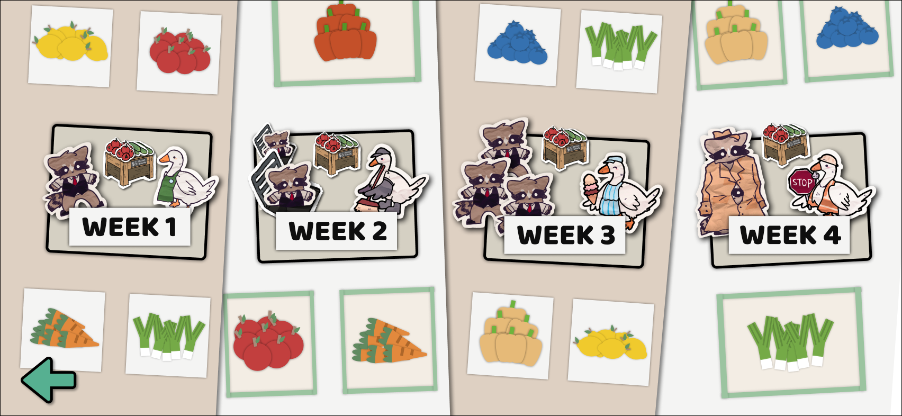
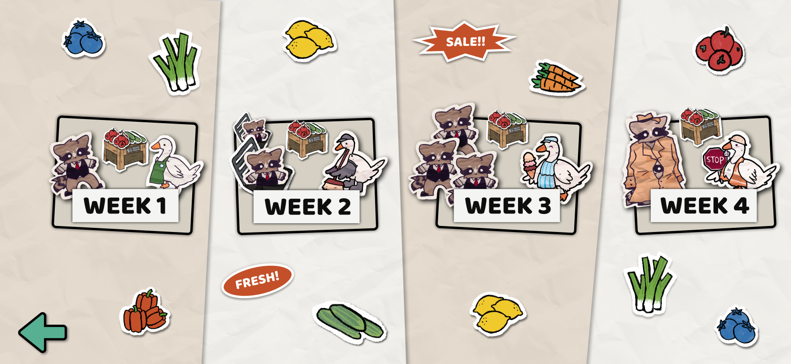
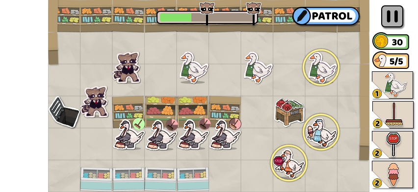
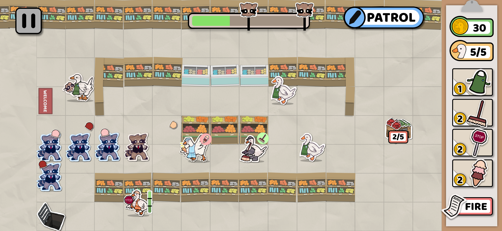
To communicate certain ideas like skill cooldown, I chose to lean more into the papercraft aesthetic. Adding bold outlines would only distract the player, since it stands out too much from the background. Using a gray overlay like a timer is nice, but would appear tiny and unnoticeable on bigger levels. My solution to this problem was to use a bright green color to signal when the skill is ready, and a duller red color for when its not. This bright green contrasts with the grocery store’s colors and attracts the player’s attention once it appears, while the red is less eye-catching.
One of the major complaints that I received from players was about the controls to activate the special geese abilities. Having to tap on the goose, then swipe in any direction away from the goose was unintuitive and hard to learn. This problem was compounded by the fact that the geese were always moving.
As we brainstormed ways to improve this interaction, I noticed that our playtesters were swiping on the goose after they tapped on it. Since that motion was intuitive to them, I felt that our new control scheme should include it. The rest of my team agreed, and offered holding down on the goose as an alternative to tapping on it. With this new control scheme, we tested it out on a new batch of playtesters. This time, I had our players fill out a Google Form after completing the first five levels.
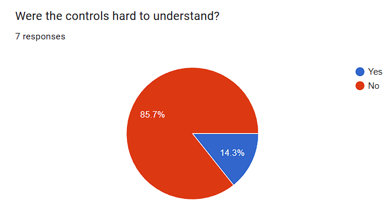
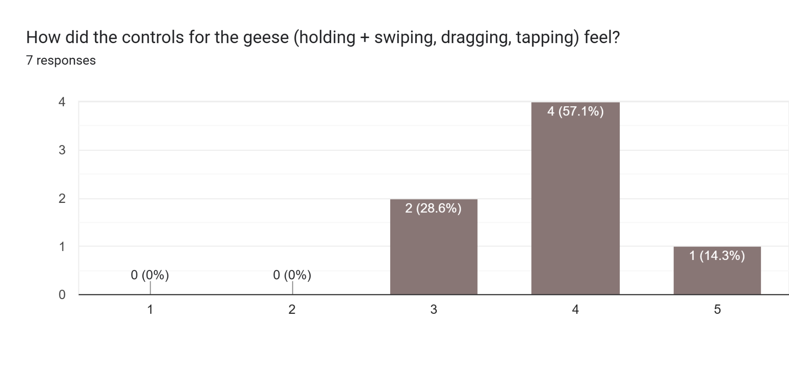
Of course, our new control scheme wasn't perfect, but our players much preferred it over the old one. We continued to make adjustments to make it more responsive and intuitive.
At long last, Showcase day arrived. We were all excited for new players to try our game and take on the invading raccoons. To our surprise, fans of our previous game, Le Petit Raccoon, came to play the sequel! Welcoming both new and familiar faces, we spent the next few hours guiding our players through our game. When the event came to a close, our professor announced the winners of the following awards: Most Polished, Most Innovative, and Audience Favorite. Our team was thrilled to win Most Polished!
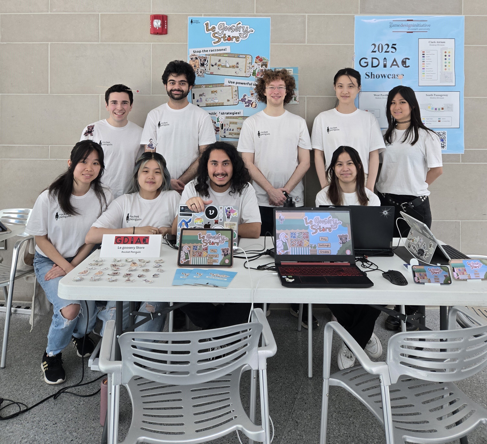
Winning an award after all the hard work we put into making the game the best it could be was incredibly rewarding. As a final accomplishment, we also successfully launched the game on both the App Store and Google Play Store!
Taking on the roles of design lead and UI/UX designer for this project was stressful at times. But at the same time, it was enriching. I was able to practice new skills such as leading a small team, ensuring quality work and coordinating with the programmers, on top of improving my UI/UX skills. One of my biggest takeaways was learning how to give and receive design feedback constructively, which ultimately made our game stronger. More than anything, this experience helped me grow as both a designer and a leader.